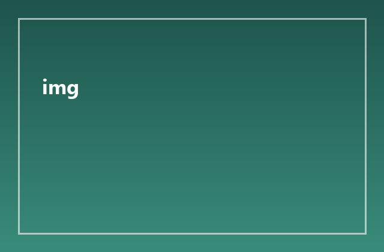

Float
Меню на странице комментариев выведено из потока и обтекается содержимым; оболочка очищается от обтекания псевдоэлементом.
Собственный макет собран на Flexbox: шапка закреплена при прокрутке, первый экран делится на две равные колонки, карточки работ переносятся на новую строку сами. Ни одной фиксированной ширины, кроме ограничения полосы набора, — страница одинаково раскладывается на мониторе и на телефоне.
Смотреть работы
Восемь лабораторных работ, собранных в одном сайте: от структуры документа до макетирования на Grid и Flexbox.
Структура документа, списки, таблицы, строчные и блочные элементы.
ОткрытьОтносительные и абсолютные ссылки, якоря, ссылки на файлы и почту.
ОткрытьВстраиваемые медиа, геолокация и рисование на холсте.
ОткрытьТипы полей HTML5, атрибуты валидации и подсказки.
ОткрытьСбор данных формы и их обработка на стороне клиента.
ОткрытьОтступы, границы, обтекание и позиционирование блоков.
ОткрытьКаскад, наследование, селекторы и единый стилевой файл сайта.
ОткрытьFloat, Grid и Flexbox: меню с формой, новости, галерея и этот макет.
ОткрытьМеню на странице комментариев выведено из потока и обтекается содержимым; оболочка очищается от обтекания псевдоэлементом.
Новости и галерея собраны сеткой: три колонки одинаковой ширины, одинаковые промежутки, автоматическое выравнивание по высоте.
Этот макет целиком на Flexbox: строки переносятся, карточки делят свободное место, подвал прижимается к низу окна.